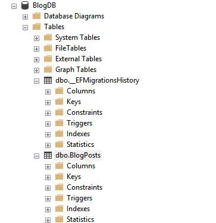
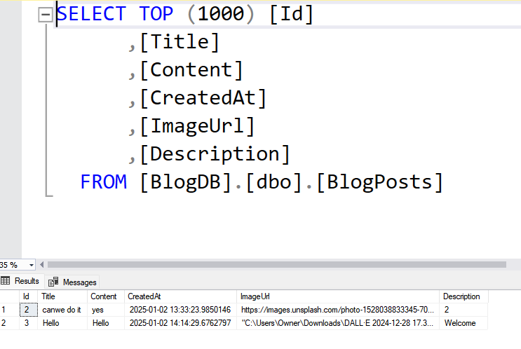

Blog Project
Technology Used: .NET MVC, SQL Server, Razor Views, Bootstrap
 View on GitHub
View on GitHub
Project Screenshots
Summary
The Blog Project is a dynamic platform where users can create, edit, and manage blog posts. It supports CRUD operations, integrates an SQL database, and features a responsive, user-friendly interface.
Key Features
- Create, edit, and delete blog posts
- Responsive design for all devices
- Integrated SQL database for real-time data storage
Steps to Build
-
1. Create the .NET MVC Project:
Start by creating a new .NET MVC project in Visual Studio using the MVC template.
-
2. Design the Database:
Design tables for blog posts, including fields for title, content, images, and timestamps.
  -
Create Models:
Define models in C# for BlogPost and other entities, mapping them to database tables.
-
Develop Controllers:
Write controllers to handle CRUD operations, routing, and passing data between the view and the database.
-
Build Razor Views:
Design the user interface using Razor syntax and Bootstrap for styling.
Conclusion
The Blog Project showcases my ability to create a functional web application using .NET MVC. It demonstrates expertise in backend development, database integration, and frontend design.